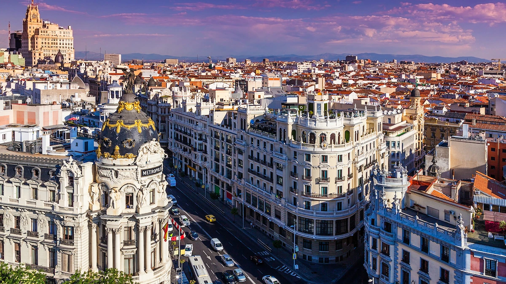
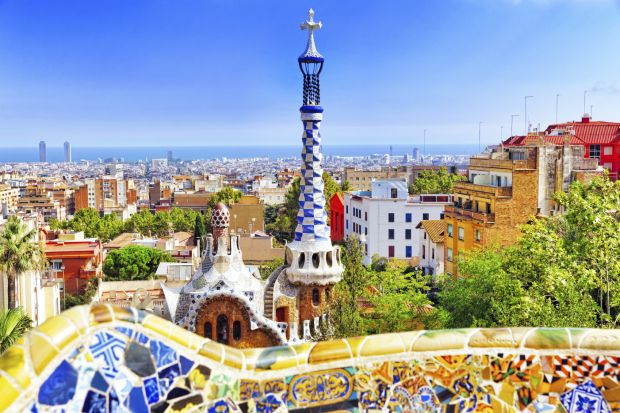
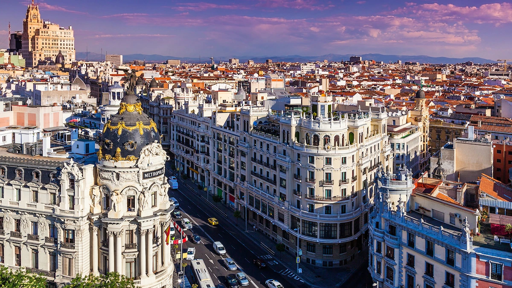
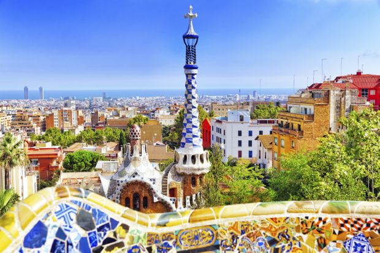
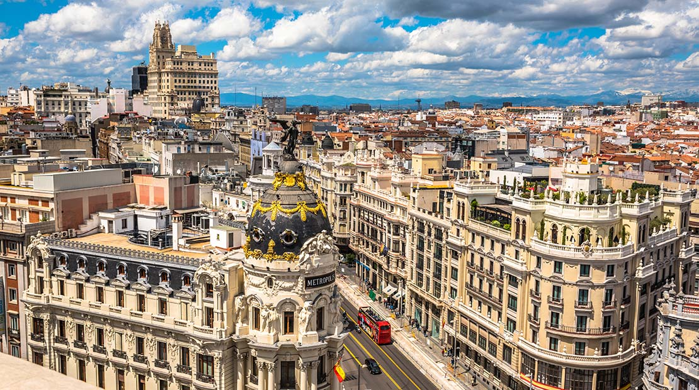
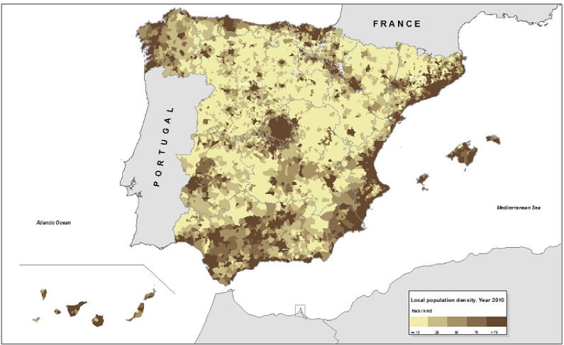

Spain
Spain, country located in extreme southwestern Europe. It occupies about 85 percent of the Iberian Peninsula, which it shares with its smaller neighbor Portugal.
Spain is a storied country of stone castles, snowcapped mountains, vast monuments, and sophisticated cities, all of which have made it a favoured travel destination. The country is geographically and culturally diverse. Its heartland is the Meseta, a broad central plateau half a mile above sea level. Much of the region is traditionally given over to cattle ranching and grain production; it was in this rural setting that Miguel de Cervantes’s Don Quixote tilted at the tall windmills that still dot the landscape in several places. In the country’s northeast are the broad valley of the Ebro River, the mountainous region of Catalonia, and the hilly coastal plain of Valencia. To the northwest is the Cantabrian Mountains, a rugged range in which heavily forested, rain-swept valleys are interspersed with tall peaks. To the south is the citrus-orchard-rich and irrigated lands of the valley of the Guadalquivir River, celebrated in the renowned lyrics of Spanish poets Federico García Lorca and Antonio Machado; over this valley rises the snowcapped Sierra Nevada. The southern portion of the country is desert, an extension of the Sahara made familiar to Americans through the “spaghetti western” films of the 1960s and early ’70s. Lined with palm trees, rosemary bushes, and other tropical vegetation, the southeastern Mediterranean coast and the Balearic Islands enjoy a gentle climate, drawing millions of visitors and retirees, especially from northern Europe.
Madrid
The famous and beautiful city, Madrid, is the capital of Spain. Madrid, the largest city in Spain, is also the capital of a small autonomous region and is geographically located in the middle of the country and the Spanish plateau. Madrid is the third largest city in the European Union after Paris and London.
The population of Madrid, including the people around it, was more than 6.5 million and the city has an area of 604.3 square kilometers. Madrid is the main city on the Iberian Peninsula due to its political, sports, economic and geographical backgrounds.
Area and Population
According to the latest estimates, the current population of Spain is about 47 million. The population density in this country is 92 people per square kilometer. The dispersion of the population in Spain is very unequal; With the exception of Madrid and its environs, the majority of the country's population lives in the coastal areas. It is interesting to know that the population of this country in 1900 was close to 18 million people.
The highest population growth in Spain dates back to the 60s and 70s. Immigrants make up about 12 percent of the country's population. Also in recent decades, a number of Spanish natives who had emigrated from this country have returned to their homeland. Spain is the 52nd largest country in the world with an area of 505,992 square kilometers.
For comparison, Spain is about 47,000 square kilometers smaller than France and 81,000 square kilometers larger than the US state of California. Spain is located between 26 and 44 degrees north, as well as the meridians 5 and 19 degrees east.
Largest Cities
| Rank | Name | Autonomous community | Pop. |
|---|---|---|---|
| 1 | Madrid | Community of Madrid | 3,266,126 |
| 2 | Barcelona | Catalonia | 1,608,746 |
| 3 | Valencia | Valencian Community | 794,288 |
| 4 | Seville | Andalusia | 688,592 |
| 5 | Zaragoza | Aragon | 674,997 |
| 6 | Málaga | Andalusia | 574,654 |
| 7 | Murcia | Region of Murcia | 453,258 |
| 8 | Palma | Balearic Islands | 416,065 |
| 9 | Las Palmas | Canary Islands | 379,925 |
| 10 | Bilbao | Basque Country | 346,843 |